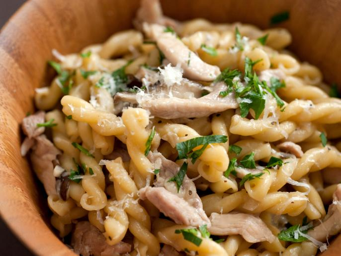

Risotto Pasta

A unique take on making pasta in the italian risotto style
Risotto is popular around the world, and so is pasta. Combining these two gives you a quick, easy weeknight meal that you can make in 20 minutes or less.
Ingredients
- 150g Spinach or Broccoli Rabbe
- 200g Ground Italian Sausage or Chicken
- 250g Tube-Style Pasta (Penne, Macaroni, etc.)
- 150g Parmesan or Pecorino Cheese
Steps
Cook the sausage in a wide pot. Try to get as much brown fond as possible.
Add the spinach and use the water to deglaze the pot and wilt the spinach.
Remove the Spinach and Sausage.
Add the Pasta, and allow it to toast in the hot pan for a moment. Do not allow the pan to scorch.
Cover the Pasta with water, but do not overfill the pot.
Cook the pasta while stirring and adding water slowly, if necessary.
When the pasta is finished, add back the Spinach and Sausage, and turn off the heat. Stir everything to combine well.
Add the cheese slowly while stirring aggresively to make an emulsion.
Serve.